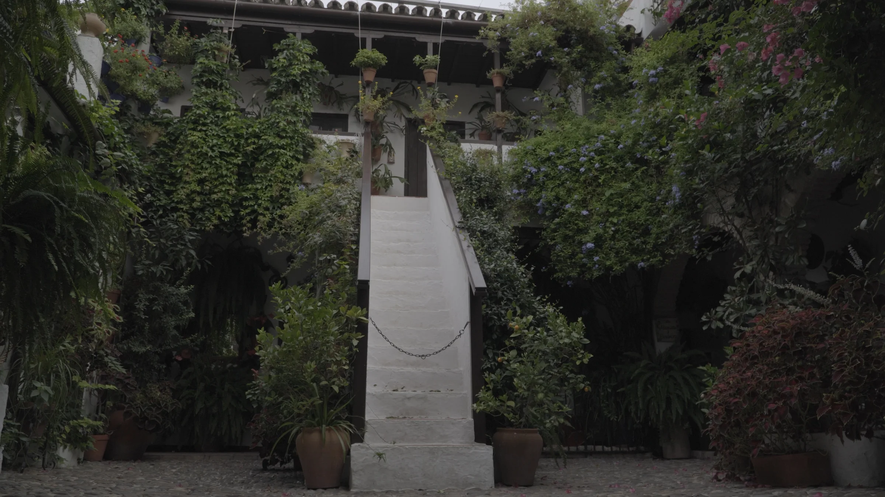

01
Patio de la Asociación de Amigos de los Patios Cordobeses
En pleno barrio de San Basilio, un emblema vivo del patio cordobés: muros encalados, macetas, escaleras de cal y detalles históricos.
En 2026 acogió «Bajo la fresca» · C/ San Basilio, 44